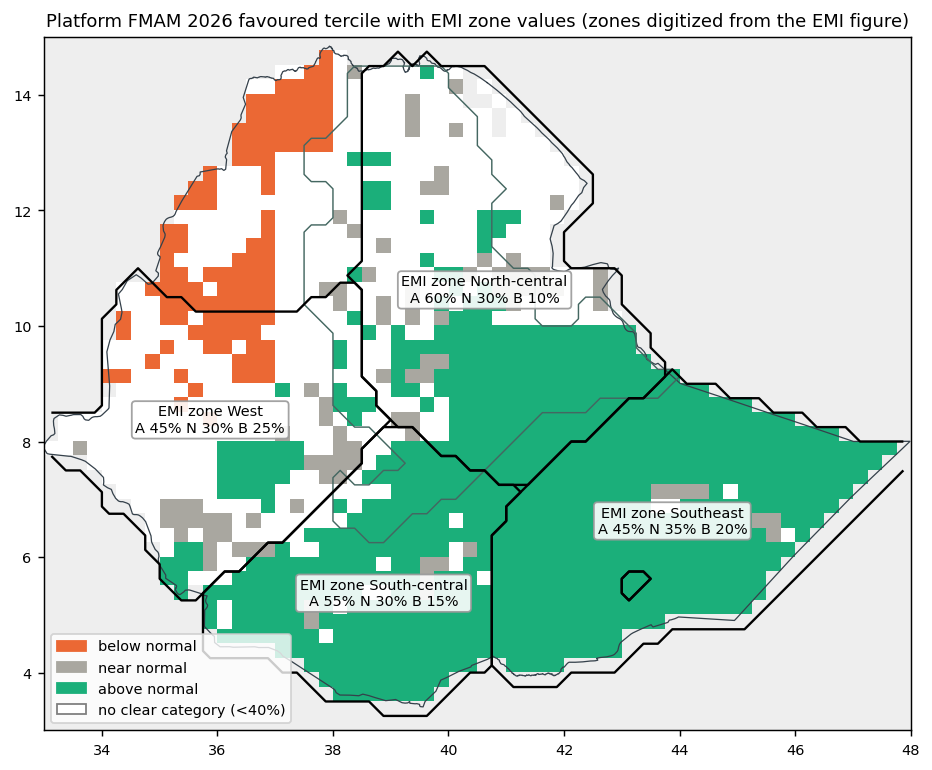
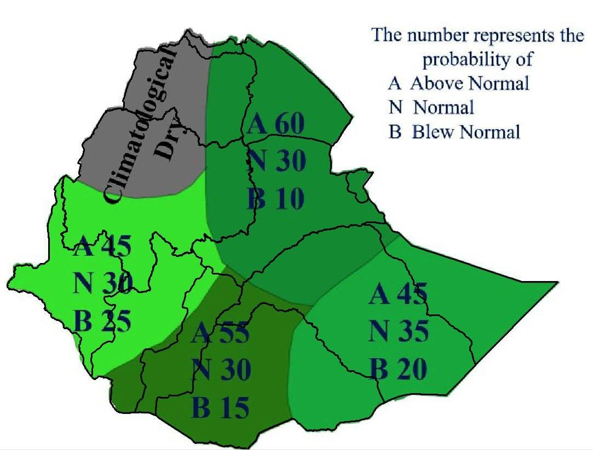
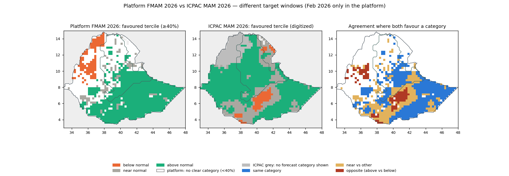
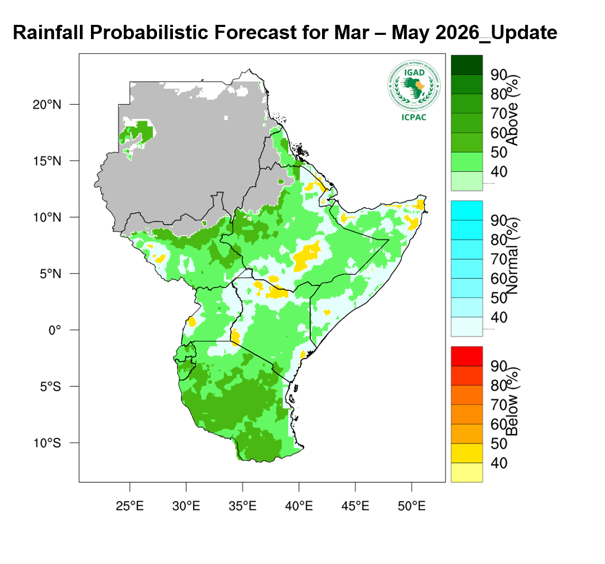

Season 2026-02-01 to 2026-05-31 · areas: All Ethiopia and the FMAM R2 (Belg) rainfall domain · built from reviewed extractions only (rules v2, 2026-10-09). Research reconstruction; not an official EMI or ICPAC forecast. The comparison describes agreement between outlooks, not which is more accurate.



Only where both outlooks show a favoured category.
| Area | Compared area (share of the analysed area) | Agreement within it | Opposite within it |
|---|---|---|---|
| All Ethiopia | 59% | 54.8% | 11.3% |
| FMAM R2 (Belg) rainfall domain | 51% | 66.5% | 0.0% |
| Zone | Official below / near / above | Platform over the whole zone (region) |
|---|---|---|
| Zone West | 25% / 30% / 45% | 32% / 33% / 35% No clear category in one source |
| Zone North-central | 10% / 30% / 60% | 26% / 35% / 39% No clear category in one source |
| Zone South-central | 15% / 30% / 55% | 22% / 33% / 45% Same category |
| Zone Southeast | 20% / 35% / 45% | 20% / 32% / 48% Same category |
Platform values are area means of local probabilities: over the whole zone (EMI homogeneous rainfall region as published in 2013, assumed unchanged) where reviewed, and over the ±0.5° sample around each arrow tip. Percentages are rounded to add up to 100%.
| Location | ICPAC (favoured category, printed interval) | Platform below / near / above | Relationship |
|---|---|---|---|
| Within zone West Partly overlaps the domain — 9% of sample cells | Above normal 40–50% 60% of shown cells; also Above normal 50–60% (36%), Near normal 33–40% (5%) | 32% / 33% / 35% | No clear category in one source |
| Within zone North-central Partly overlaps the domain — 77% of sample cells | Above normal 40–50% 58% of shown cells; also Near normal 33–40% (32%), Below normal 40–50% (5%), Above normal 50–60% (5%), Above normal 33–40% (<1%); 4% of the sample grey (no forecast category shown) | 26% / 35% / 39% | No clear category in one source |
| Within zone South-central Partly overlaps the domain — 16% of sample cells | Near normal 33–40% 48% of shown cells; also Above normal 40–50% (32%), Below normal 40–50% (20%) | 22% / 33% / 45% | Near normal vs other |
| Within zone Southeast Partly overlaps the domain — 1% of sample cells | Above normal 40–50% 77% of shown cells; also Near normal 33–40% (19%), Below normal 40–50% (4%) | 20% / 32% / 48% | Same category |
| All Ethiopia | Above normal (most often 40–50%) shown on 89% of the area; 11% grey (no forecast category shown) | 27% / 33% / 40% | Same category (where both show a category) |
| FMAM R2 (Belg) rainfall domain | Above normal (most often 40–50%) shown on 90% of the area; 10% grey (no forecast category shown) | 26% / 35% / 39% | Same category (where both show a category) |
ICPAC publishes only the favoured category and its probability interval (the other two categories are not published), for 2026-03-01 to 2026-05-31; the platform covers 2026-02-01 to 2026-05-31. Locations are the EMI arrow-tip boxes or the digitized EMI zones; platform values are area means of local probabilities over each location or area.
The platform does not show a unique favoured category over EMI zone West under its applicable rule. EMI prints 25% / 30% / 45% (below / near / above). Over the whole zone (as digitized from the EMI figure), the platform area mean is 32% / 33% / 35%: no clear category in one source.
The platform does not show a unique favoured category over EMI zone North-central under its applicable rule. EMI prints 10% / 30% / 60% (below / near / above). Over the whole zone (as digitized from the EMI figure), the platform area mean is 26% / 35% / 39%: no clear category in one source.
Both outlooks favour wetter-than-normal conditions over EMI zone South-central. EMI prints 15% / 30% / 55% (below / near / above). Over the whole zone (as digitized from the EMI figure), the platform area mean is 22% / 33% / 45%: same category.
Both outlooks favour wetter-than-normal conditions over EMI zone Southeast. EMI prints 20% / 35% / 45% (below / near / above). Over the whole zone (as digitized from the EMI figure), the platform area mean is 20% / 32% / 48%: same category.
The EMI zones were digitized from the figure's fill colours and placed by fitting the country outline, so their boundaries are approximate; the figure states no reference period, so probability differences are not calculated.
The outlooks favour different categories over much of their shared displayed area in Ethiopia. ICPAC shows a favoured category on 89% of Ethiopia and no forecast category shown (the legend does not explain the grey areas) on 11%; where it shows one it favours above normal on 69%, most often at 40-50% and 33-40%. The platform favours above normal on 50% and below normal on 7% of Ethiopia. There is category agreement of 54.8% within the compared area, which covers 59% of the analysed national area; opposite categories (above vs below) on 11% of the compared area. ICPAC publishes only the favoured category and its probability interval, so probabilities are not differenced. The official outlook covers Mar 2026–May 2026 and the platform Feb 2026–May 2026 (Feb 2026 only in the platform), so this compares spatial tendencies, not probabilities for the same seasonal event.
Above-normal rainfall is the most common favoured category in both outlooks in the FMAM R2 (Belg) rainfall domain, but they disagree over a substantial part of their shared displayed area. ICPAC shows a favoured category on 90% of the FMAM R2 (Belg) rainfall domain and no forecast category shown (the legend does not explain the grey areas) on 10%; where it shows one it favours above normal on 79%, most often at 40-50% and 33-40%. The platform favours above normal on 43% and below normal on <1% of the FMAM R2 (Belg) rainfall domain. There is category agreement of 66.5% within the compared area, which covers 51% of the analysed domain. ICPAC publishes only the favoured category and its probability interval, so probabilities are not differenced. The official outlook covers Mar 2026–May 2026 and the platform Feb 2026–May 2026 (Feb 2026 only in the platform), so this compares spatial tendencies, not probabilities for the same seasonal event.
Not calculated: rainfall-anomaly differences, because no official rainfall-amount anomaly product was found in the checked ICPAC and EMI products; which forecast is more accurate, because that needs observations and a separate verification design (see Verification); same-event probability differences, because the target windows or spatial supports differ and ICPAC publishes only favoured-category intervals.
| Product | Rainfall forecast - March - May 2026 - IGAD Region |
|---|---|
| Target period | 2026-03-01 to 2026-05-31 |
| Issue date | not stated by the provider |
| Reference period | not stated |
| Retrieved | 2026-10-09 |
| Latest check | Checked 2026-10-09: new product, reviewed |
| Content hash (SHA-256) | a9d7f6106eb5cb61e2b7ac9aa3e15a43750615d0d55131e726d6c554738240fe |
| Extraction | validated |
| Review | validated by Yonas M, 2026-10-09 |
| Source page | https://www.icpac.net/seasonal-forecast/Mar-May-2026/?region=1&resource_type=27 |
| Original file | https://www.icpac.net/media/images/GHA-MAM-Rainfall.original.png |
Wetter than normal conditions expected over most parts of Ethiopia, parts of northern and central and southern Somalia, northern Eritrea, South Sudan, central to southern Kenya, Uganda, Rwanda, Burundi, and Tanzania.
Normal to drier than normal conditions are expected over western and northern Kenya, western and eastern Uganda, south-western to central and north-eastern Ethiopia, Djibouti, western South Sudan and most parts of Somalia.
— ICPAC

| Product | Bega 2025-26 Assessment and Belg2026 hydro met Bulletin |
|---|---|
| Target period | 2026-02-01 to 2026-05-31 |
| Issue date | not stated by the provider |
| Reference period | not stated |
| Retrieved | 2026-10-09 |
| Latest check | Checked 2026-10-09: new product, reviewed |
| Content hash (SHA-256) | 4a0d4eedcc7c108ab4a6f91c242adde43f46b4dad024e17a48b3b7164392d066 |
| Extraction | validated |
| Review | validated by Yonas M, 2026-10-09 |
| Source page | https://www.ethiomet.gov.et/products/seasonal-hydromet-bulletin/bega-2025-26-assessment-and-belg2026-hydro-met-bulletin/ |
| Original file | https://www.ethiomet.gov.et/documents/625/Bega_2025_26_and_Belg_outlook2026E_Hydromet_bulletin_English_bulletin.pdf |
Summery and advisory for coming Belg (FMAM), 2026 For Belg 2026, rainfall in the Belg-benefiting catchments is anticipated to be normal to above normal Rainfall condition. February is expected to remain mostly dry, while from March through May, the catchments are likely to experience better conditions, to increase the availability of surface water and groundwater recharge. Tercile probability on basin map for coming belg 2026 Season During the coming Belg 2026 season (typically February to May), meteorological forecasts indicate that Most of Belg Benefiting catchments are likely to receive above Normal rainfall amounts over Most of Genale dawa, and lower Reft vally and close to normal or above normal rainfall condition over Wabeshebele, Awash Afar Denakel, Ommo Gibe, Baro Akobo and Upper and Middle Abay Basins. This pattern has important implications for both surface water discharge (riv
— EMI
| Comparison | Where | Status | Reason |
|---|---|---|---|
| display official probabilities | West | available | |
| favoured category relationship | West | unavailable | reviewed visual (arrow-tip neighbourhood) |
| zone mean probability | West | available | zone polygons digitized from the EMI figure |
| same event probability difference | West | unavailable | zone geometry requires alignment; official reference period unknown |
| display official probabilities | North-central | available | |
| favoured category relationship | North-central | unavailable | reviewed visual (arrow-tip neighbourhood) |
| zone mean probability | North-central | available | zone polygons digitized from the EMI figure |
| same event probability difference | North-central | unavailable | zone geometry requires alignment; official reference period unknown |
| display official probabilities | South-central | available | |
| favoured category relationship | South-central | unavailable | reviewed visual (arrow-tip neighbourhood) |
| zone mean probability | South-central | available | zone polygons digitized from the EMI figure |
| same event probability difference | South-central | unavailable | zone geometry requires alignment; official reference period unknown |
| display official probabilities | Southeast | available | |
| favoured category relationship | Southeast | unavailable | reviewed visual (arrow-tip neighbourhood) |
| zone mean probability | Southeast | available | zone polygons digitized from the EMI figure |
| same event probability difference | Southeast | unavailable | zone geometry requires alignment; official reference period unknown |
| mapped category agreement | All Ethiopia | available | reviewed digitization |
| mapped category agreement | FMAM R2 (Belg) rainfall domain | available | reviewed digitization |
| same event probability difference | — | unavailable | target window mismatch; official publishes only favoured category interval |
| rainfall anomaly difference | — | unavailable | official amount anomaly not found in checked products |
| forecast accuracy | — | unavailable | out of scope: needs observations and a separate verification design (see the Verification section) |